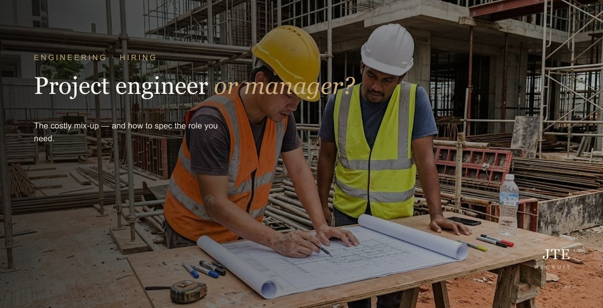
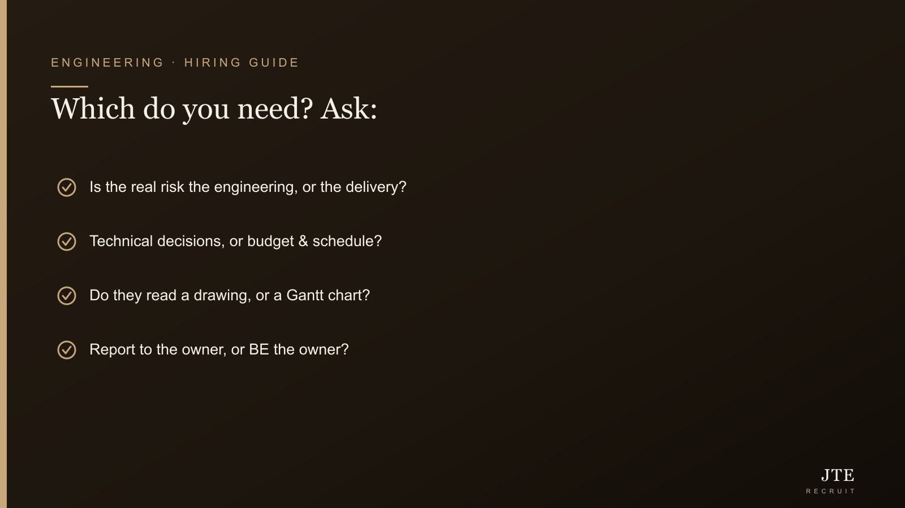

Short answer: these two titles get mixed up constantly, and it quietly costs you a hire. A project engineer owns the technical work inside a project; a project manager owns the delivery — schedule, budget, stakeholders. I’ve seen employers spec one, hire the other, and only realise months later when the project’s already jialat (in a real mess). To get it right, decide whether your actual worry is the engineering being done well or the project landing on time, spec around responsibility rather than the title, and budget properly for the rare person who genuinely does both.
This is one of the most expensive small mistakes we see land on an engineering job spec — and it’s completely avoidable once you’re clear on which problem you’re actually solving.

The difference, plainly
A project engineer is deep in the detail. They own the engineering: interpreting specs, producing or checking drawings, selecting and managing technical vendors, solving the problems that come up on site, and making sure what gets built is technically right. A project manager sits a level up and wider: they own the plan — the schedule, the budget, the stakeholders, the risks — and are accountable for the project landing on time and on cost. On a large project, project engineers report into a project manager; the manager rarely does the hands-on engineering themselves.
It’s easier to feel the difference through a normal day. A project engineer’s day is technical problems: a drawing that doesn’t match site conditions, a vendor part that won’t fit, a specification to interpret, a test that failed and needs diagnosing. A project manager’s day is the plan and the people: a slipping milestone to recover, a client update, a budget line that’s creeping, a sub-contractor to chase, a risk to head off. Both are busy all day — but on completely different things. Picture whose day matches the problem you’re actually trying to solve, and you’ll know which one to hire.
Why it confuses almost everyone
In a smaller company, one capable person often does both jobs, so the titles blur into one another. On a large project they’re distinct roles with different skills, different pay and different people. The trouble starts when an SME writes “project manager” but actually needs the hands-on technical owner, or writes “project engineer” but really needs someone to run budget, timeline and clients. The advert attracts one type; the need was the other.
The cost of getting it wrong
Hire a strong technical project engineer into what’s really a delivery role and you get excellent engineering while the schedule slips and the budget drifts, because nobody’s truly holding the plan. Hire a polished project manager into what’s really a technical role and the timeline looks great while the engineering decisions go unmade or get pushed to people who shouldn’t be making them. Either way you’ve paid a good salary for the wrong outcome, and often you don’t realise until the project’s already in trouble.
Decide this first: depth or delivery?
One question sorts most of it: do you need technical depth, or delivery and coordination? If the core risk is that the engineering gets done right, you need a project engineer. If the core risk is that the project lands on time, on budget, with clients and stakeholders managed, you need a project manager. Be honest about which keeps you up at night — that’s the role.
Spec around responsibility, not the title
Once you know which you need, describe the role by what the person will be responsible for, not the label: the scope they’ll own, whether they hold the budget and the schedule, the size of the team (if any) reporting to them, and the technical decisions they’ll personally make. Interview on those same things — ask for a concrete project they owned, what they were accountable for, and where it went wrong — and the right shape of person becomes obvious quickly.
What about the person who does both?
They exist, and on smaller projects they’re ideal — but a genuine do-both hire is more senior and more expensive, because you’re paying for two skill sets in one person. If that’s what you need, say so plainly in the brief and budget for it; pretending a mid-level salary will attract a true both-in-one just leaves the role open. Our honest look at what a good engineer costs covers how to budget for the rarer combinations.
When contract fits
Both roles are often project-shaped by nature, which makes them natural candidates for contract. If you need a project engineer or manager for the life of a specific build, a contract hire gives you the skill for exactly that window without a permanent commitment — see contract vs permanent engineers for when each makes sense.
A 60-second self-test: which do you need?
Ask yourself four quick questions. Is your biggest worry that the engineering gets done right, or that the project gets done on time and on budget? Will this person mostly make technical decisions, or coordinate people and money? Do they need to read a drawing, or a Gantt chart? And will they report into someone who owns delivery, or be the person who owns it? If your answers lean technical, you need a project engineer; if they lean delivery, you need a project manager. If they’re genuinely split, you need the rarer do-both — and should budget for it rather than hope one turns up at a single-role salary.
The titles that muddy the water
It isn’t only these two. “Site engineer”, “engineering manager”, “construction manager” and “project lead” all overlap the same space and mean different things at different companies. Don’t rely on the title a candidate carried at their last employer, or even the one you put on your own advert — two people with identical titles may have done completely different jobs, and two companies may use the same word for very different levels of responsibility. Anchor every conversation to responsibilities and outcomes, and the labels stop tripping you up.
The mistake I see most often
Here’s the trap, and I’ve watched good bosses walk straight into it: you write “project manager” on the ad because it sounds more senior, but what you actually need is the hands-on technical owner — or the other way around. Then you hire a lovely coordinator who can’t make the engineering calls, or a brilliant engineer who can’t hold a budget, and the project starts to wobble. Don’t pick the title that sounds impressive. Pick the one that matches the problem actually keeping you up at night.
The bottom line
Project engineer or project manager isn’t a question of seniority — it’s a question of which risk you’re managing. Get clear on that one thing, write the spec around real responsibilities instead of a job title, and you’ll stop interviewing the wrong people. And if you genuinely need both in one head, that’s fine — just know it’s rarer, and pay for it.
Frequently asked questions
What’s the difference between a project engineer and a project manager?
A project engineer owns the technical work inside a project — specs, drawings, vendors, engineering decisions and site problems. A project manager owns delivery of the whole project — schedule, budget, stakeholders and risk. The engineer goes deep on the engineering; the manager goes wide on the plan.
Can one person be both a project engineer and a project manager?
Yes, and on smaller projects it’s common — but a genuine do-both hire is more senior and more expensive, because you’re paying for two skill sets. If you need both in one person, budget for it rather than expecting it at a single-role salary.
Which do I need for a construction or manufacturing project?
It depends on your biggest risk. If the danger is that the engineering gets done wrong, you need a project engineer. If the danger is that the project runs late or over budget with stakeholders unmanaged, you need a project manager. Larger projects usually need both.
Does a project engineer become a project manager?
Often, yes — it’s a common career path, as strong project engineers move from owning the technical detail to owning delivery. But the two roles need different strengths, so a great project engineer isn’t automatically a great project manager, and vice versa.
What should a project engineer or project manager be paid?
It varies with seniority, sector and project scale, and a true do-both commands a premium. Benchmark the specific role against the current market rather than the title alone — our engineering salary guide keeps ranges by level.
Should I hire on a permanent or contract basis?
Both roles are frequently project-shaped, which makes contract a natural fit — you get the skill for the life of the build without a permanent commitment, and can convert to permanent if the pipeline of work continues.
Half of getting this hire right is writing the spec right — a conversation we have with clients every week before we source anyone. Tell us what the project needs and we’ll help you scope it, then find the right person for it. More on engineering recruitment at JTE.